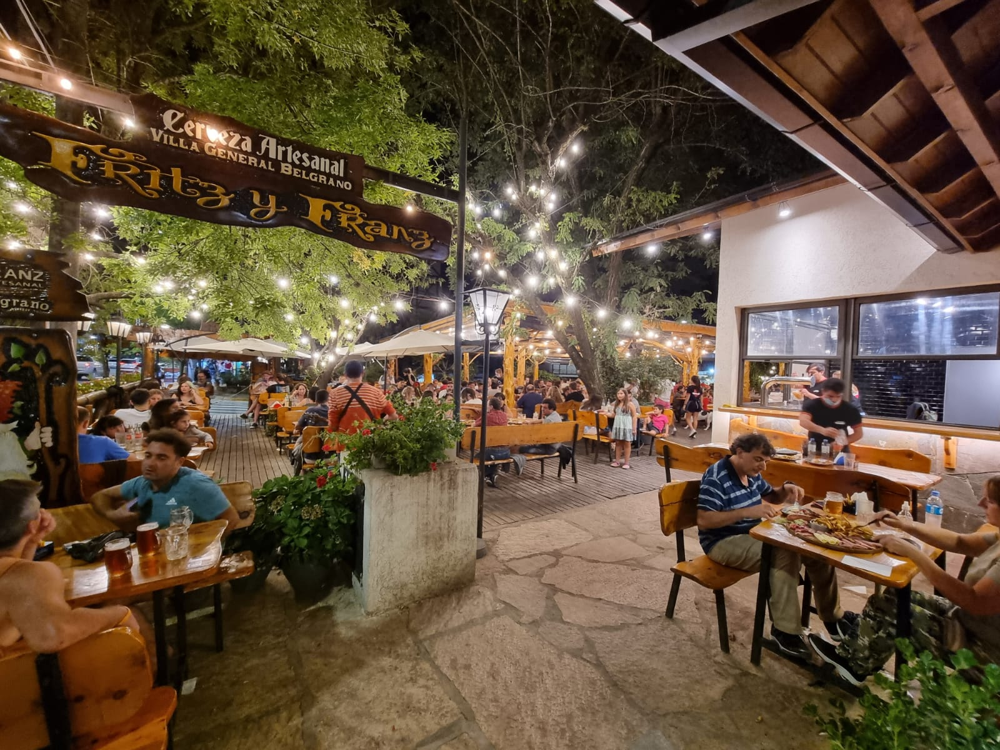
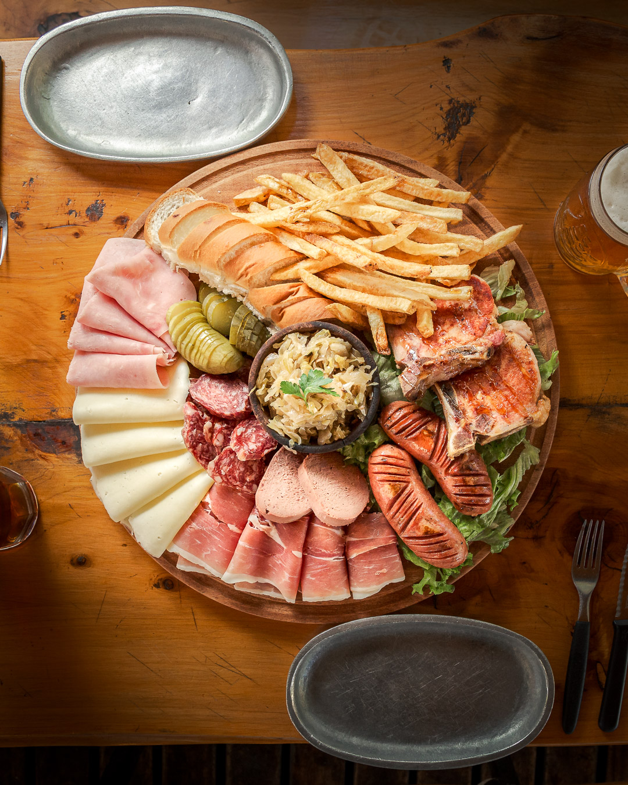
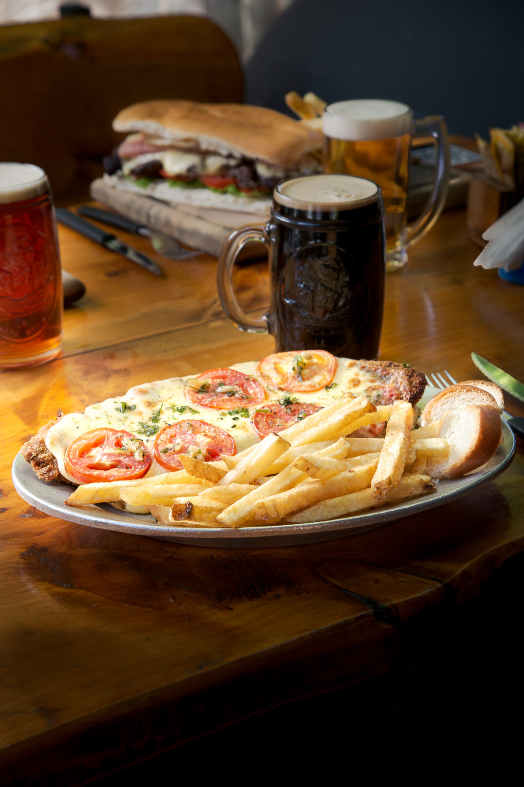

Bienvenidos a Fritz & Franz

Fritz & Franz es una FastFood en una villa alemana de un pueblo cordobes dentro de Argentina
Te contamos que tenemos y que nos hace especial.


Esta es una de nustras tablas tipicas alemanas, te volves loco cuando llega y es ideal para compartirla con una cervecita artesanal.
Por este lado si sos mas del fastfood te dejamos esta terrible hamburguesa Cheddar, con ese rico beacon y ese quesito que tanto nos gusta


Y si todo lo que te mostre no te convencio, aca tenes esta teremenda milanesa a la pizza que nunca falla